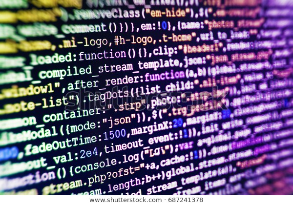

Denne omdiskuterte appen kan være et steg i riktig retning og kanskje senke spredningen av Covid-19 betraktelig. På den ene sidenkan denne appen gi myndighetene tilgang til hvor enhver borger befinner seg til enhver tid. Dette kan bidra til å redde liv.I motsetning til tidligere pandemier og epidemier har ikke menneskeheten hatt teknologien og en slik muligheten til å kontrollere spredningen. Gjennom algoritmer knyttet tillokasjonsdata, får Folkehelseinstituttet større oversikt over situasjonen og kan justere seg etter den.
Likevel skal det poengteres at ettersom appen skal innhente informasjon om lokasjon og kontakter kan dette føre til en redusert frihet i demokratiet, hvor vi ikke helt sikkert vet hvordan den informasjonen prosesseres eller lagresvidere. I tillegg står det beskrevet i følge NRKBeta, at Simula-Appen vil lagre nordmenns persondata i et sentralt lager i opp til tretti dager. Begynnelsen på en slik kontrollerende atferd av myndighetene kan videreutvikles til en større overvåkning av innbyggerne på bakgrunn av dens effektive virkning. Selv om den norske stat har få motiver for en slik utvikling, har vi som borgere ingen garanti for det ikke vil skje, dersom man først begynner å se hvor gunstig det kan være.
Dersom jeg skulle vært beslutningstaker, ville jeg nok vært for en slik app dersom den ga klare opplysninger over hvilke persondata som samles inn, hvor lenge, at appen er helt frivilligog at appener helt open source(hvilket den ikke er per. I dag).Jeg ville stilt meg kritisk til innhenting over persondata, men også tatt i betraktning at dette ikke er en ordinær situasjon. Ettersom at «disparatetider krever desperate tiltak», mener jeg det er gunstig ovenfor den norske befolkningen at en slik app benyttes i denne perioden hvor smitten pågår.
For å konkludere teksten ovenfor, kan det sies at appen med stor grad er velomdiskutert. På den ene siden tillater appen å spore smitten, men på den andre kan den føre til mer overvåkning og mindre trygghet hos den norske populasjon.
Innlegget er skrevet av Fredrik Langen